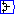
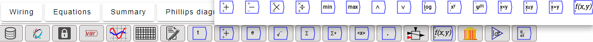

Except for , which invokes a pop-up sideways menu for defining variables, constants and parameters, the first 8 icons on the Operations bar--from data importing to the simulation time-are immediately activated by clicking on them. The remaining mathematical and data operations are stored on pop-up sideway menus, which are activated when you click on the menu's icon. For example, clicking on the  symbol brings up the Binary Operators menu:



 -th moment
-th moment